9 Filtering flowdata
This chapter concerns the filtering procedures for flowdata in order to reduce the graphic complexity of the flow map - the so-called spaghetti effect.
Filtering procedures are also important to select useful information: links and/or nodes to obtain an interesting flowmap.
Without filtering, the flowmap patterns reveals a spaghetti-effect. See example
EXAMPLE: RICardo international trade flows like a dish of spaghetti.
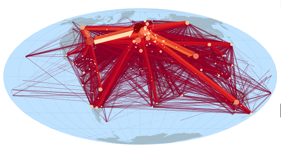
The selected information shown is described in percent on the bottom of the right panel. Here, all the information is represented :100% of the links,100% of the nodes and 100% of the total information).
Filtering can be performed in Arabesque on all variables describing the nodes and/or links.
9.1 Available filtering procedures
9.1.1 Filtering possibilities
Filtering is available on numerical, temporal and categorical variables.
9.1.1.1 Numerical variables
Numerical filtering applies to quantitative (absolute, continuous or pseudo-continuous) dat is done either visually with a brush on an interactive histogram or bar chart. It is also possible to indicate a threshold.
9.1.1.2 Temporal variables
The filtering possibilities of the temporal matrices are currently only available for links. They concern the choice of a date or a period, in a numerical or graphical form (slider). Three date formats are available (string, hours, timestamp).
9.1.1.3 Categorical variables
Categorical filtering is applied to nominal qualitative data available in node and/or link datasets. Three possibilities are offered, graphically and numerically:
– Selection of multiple variables: the user chooses one or more of the available categorical variables (e.g., prefectures and sub-prefectures if a variable specifying the administrative profile of French cities is available) or the type of links (e.g., import or export for trade data);
– Selection of a single variable: the user chooses a single variable (for the nodes: for example, the flows from and to France for mobility data; the import type flows for trade data);
– Selection by deletion of a single variable: the user chooses one or more variables relating to the nodes and links to be deleted. If the deletion selection concerns nodes, all the corresponding links (for example, the Ile-de-France region for an analysis at the national level) are deleted.
9.1.2 Implementing filtering
The Arabesque filtering possibilities depend on the type of variable/procedure of filtering, as well as the corresponding graph for visual implementation.
Three main possibilities are proposed
– (1) Visual filtering using modular selection area (brush) applied on the histogram of the distribution of links for a given variable.
– (2) Numerical filtering by entering a minimum (and/or maximum) threshold value.
– (3) Visual filtering for categorizes data, by selecting one or more values from a drop-down list
9.2 Filtering by links
 Icon indicating the existence of a filtering possibility applied on the links.
Icon indicating the existence of a filtering possibility applied on the links.
9.2.1 Add filter

First, it is to click on Add filter on the bottom of the right panel, then on Link in the opened window.
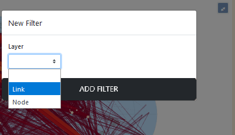
The most common filtering consists in thresholding on the flow values (the volume variable declared when importing the data)
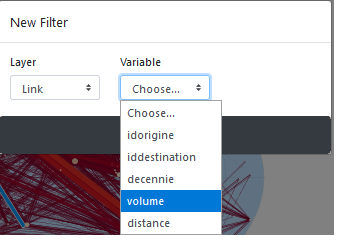
For links, the possibility of filtering according to the distance traveled is also proposed.
It is possible to choose the variable - or declare/type its format in order to draw an histogram for example.
9.2.2 Choose the format of the variable to be filtered
You must declare the type of data so that the corresponding graph can be displayed to allow visual thresholding.
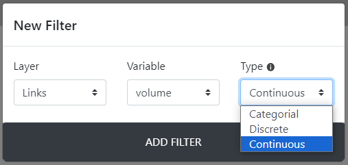
Categorial is for qualitative categorical variables
Continuous is for filtering quantitative variable with the slider on a measure or on an interval of values.
Discrete is for selecting one or more modality/measure relating to links (and the corresponding nodes, and reversly) from be flowmap.
Categorical is for filtering on a single/several modality of a qualitative variable
Above, the volume is declare as numeral for plotting the resulting map with RICardo data set:
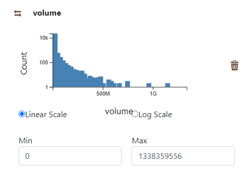
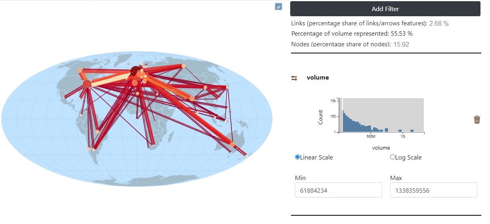
The selected information shown is described in percent on the bottom of the panel. Here only 2,6% of the links and 15% of the nodes represents 56% of the total volume of trade flows.
The minimum and maximum values are automatically shown on the histogram. It is possible to change these values by brushing on the histogram.
9.2.3 Multi variables filtering
Several filter can be applied on links. Hereby, we add a second filter on the distance variable.
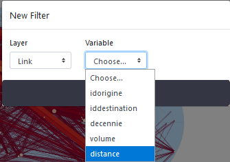
The two filter will then be available in the right panel (hereby, volume and distance)
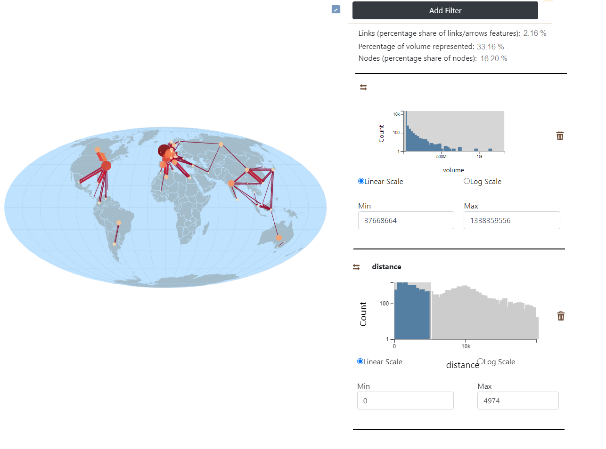
Only flows that have traveled less than 4900 km are depicted.
9.2.4 Local filter of links: by origin or destination
It is also possible to filter the links by origin or by destination.
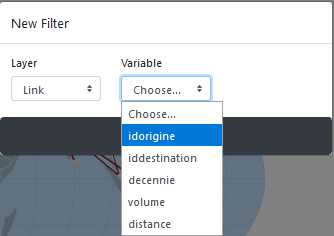
Then, it is a matter of specifying a type, here categorical, to display the flows issued from a country.
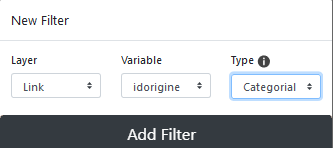
You must then choose the country in the list or enter the name of the selected one.
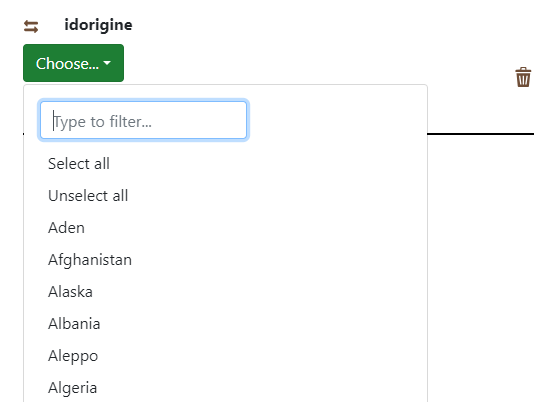
Here we entered France.
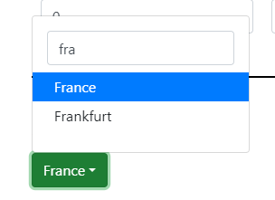
In order to display all flows from France, the (possible) other active filters have been set to zero.
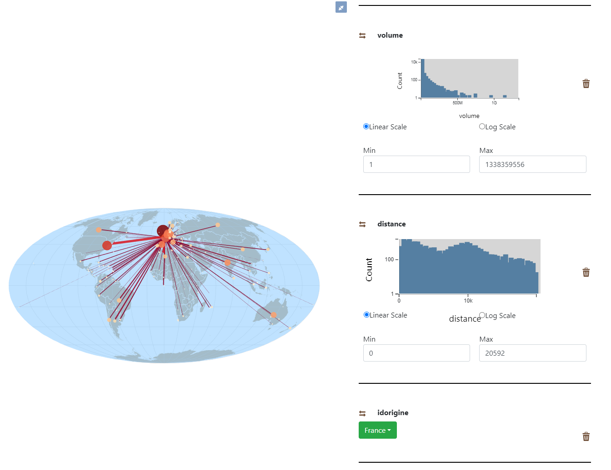
NOTE: in order to be able to see all the flows from one place of origin (or destination), it is necessary to set the previous filters to zero (but it is not necessary to delete them).
9.2.5 Filter by a categorical variable
It is possible to select one or several categorical variables (ie countries of origins, destinations, dates),
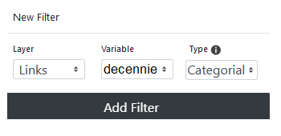